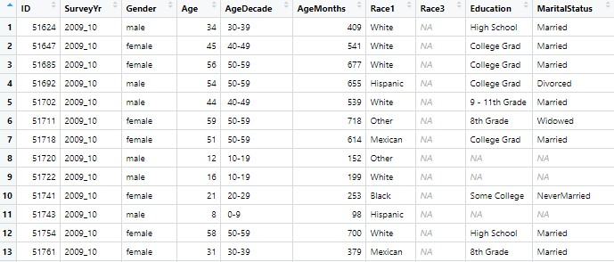
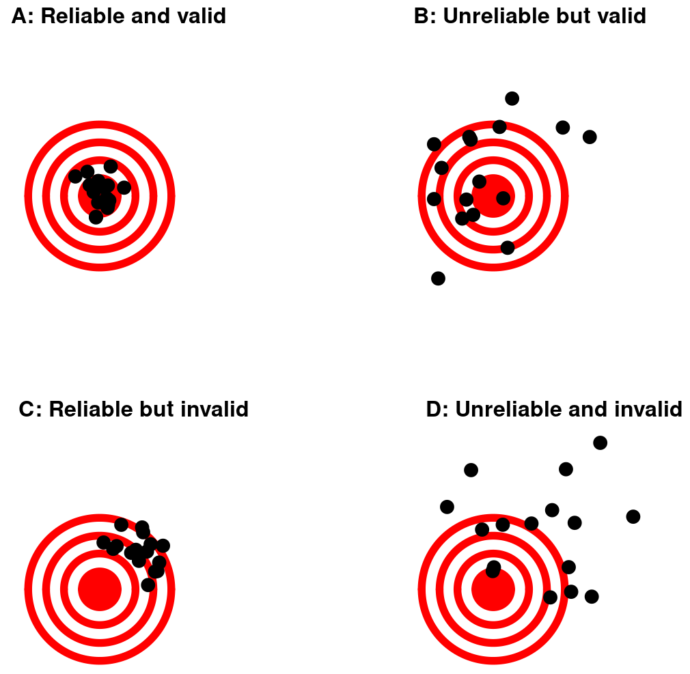

print("Hello World")[1] "Hello World"Julius-Maximilians-University Würzburg
Course: “Biostatistics”
Translational Neuroscience
Who am I?
. . .
Who are you?
What is your background?
Do you have experience with data analysis?
What’s your attitude towards statistics?
Survey (Zoom) + Moodmeter (pick a stamp - top of screen, select annotate…)
Too many people to have an introduction round!
I know that you probably don’t know each other yet, there will be some break-out sessions where you can get to know each other a bit (and talk about stats!) ;)
Stats Anxiety: It will be packed, but it will be ok (You can always reach me with questions!)!
print("Hello World")[1] "Hello World". . .
Attendance is mandatory! (I don’t make the rules :) )
You may miss one session without giving reasons (recommendation: don’t waste it early!)
If you miss additional sessions, please write an email with an explanation (further proof may be required, e.g. doctor’s certificate)
. . .
The course will take place in person
. . .
We will use these textbooks (Open Educational Resources - freely available online, also linked in WueCampus):
Statistical Thinking for the 21st Century: https://statsthinking21.github.io/statsthinking21-core-site/index.html
For the R part: Fundamentals of Quantitative Analysis: https://psyteachr.github.io/quant-fun-v2/
Online: Participation, videos, chat…
Or R Session on Tuesday and video before? Some can’t make it on Wednesdays… (chat or speak out)
Attendance: If 2x per week sync: max. 3 missed classes, if 1x per week: max. 2 missed classes (unless I know your reasons for missing Wednesdays!) –> if you missed more, I can’t admit you for the exam/report
The input and hands-on sessions will be highly based on these two textbooks. You don’t need to read the textbooks, but it will of course help if you either read the chapter before or after the sessions: Repetition is always helpful!
For some, e.g. the psychologists, it will be more of a repetition - but you will also learn R.
Slides might be text heavy –> so that you can go through the slides afterwards again (but textbook might also be helpful)
. . .
Find a dataset that can answer a question you are interested in
. . .
preprocess/wrangle it,
analyze the data,
and write a short (min. 2-page) report!
| Date | Topic | Reading | Project Deadlines |
|---|---|---|---|
| 17.10. | General & R Intro | ST21: 1-3, QF: 1-3 | |
| 24.10. | Probability | ST21: 4, QF: 4-6 | |
| 31.10. | Data Wrangling | ST21: 4, QF: 4-6 | |
| 07.11. | Data Visualization | QF: 7 | |
| 14.11. | Sampling | ST21: 7-8, QF: 8 | |
| 21.11. | Probability & Sampling in R | ST21: 7-8, QF: 8 | |
| 28.11. | Hypothesis Testing | ST21: 9-10 | |
| 05.12. | Comparing Means & Categories | ST21: 12, 15 | Dataset |
| 12.12. | Exercises (t-Tests, Chi²) | ST21: 12, 15 | |
| 19.12. | (Generalized) Linear Models | ST21: 12-13 | Research Question & Hypotheses |
| 26.12. & 02.01. | Christmas & New Year’s | ||
| 09.01. | Exercises (GLM) | ST21: 12-13 | |
| 16.01. | Linear Mixed Models | ST21: 14 | |
| 23.01. | Exercises (LMM) | ST21: 14 | Analysis |
| 30.01. | Troubleshooting Your Report | ||
| 06.02. | Reproducible Research | ST21: 18 | Report |
ST21: Statistical Thinking for the 21st Century
QF: Fundamentals of Quantitative Analysis (QuantFun)
The first four weeks will be basics, the next 4 will be analyses.
You’re doing a research master!
We live in an increasingly data-centric world
Facts & data literacy matter more than ever!
Fake News, “Lying with stats”, Reproducibility Crisis
Being able to call bullshit (https://www.callingbullshit.org/)
“I only believe in statistics that I doctored myself” ― Winston S. Churchill
break-out session, 3 min.
–> Afterwards: write in chat or speak, what did you come up with?
possibly show empirical cycle or the like to indicate that stats are necessary at almost every step
“a systematic way of thinking about how we describe the world and use data [to] make decisions and predictions, all in the context of the inherent uncertainty that exists in the real world.” (Poldrack, Preface of ST21)
“Statistical thinking is a way of understanding a complex world by describing it in relatively simple terms that nonetheless capture essential aspects of its structure or function, and that also provide us some idea of how uncertain we are about that knowledge.” (Poldrack, Chapter 1)
break down complexity, include uncertainty
. . .
Write in chat! (after first bullet point!)
example availability heuristic from book (or any other example where intuition is wrong, i.e. vaccinations/covid…)
--> test in class? Ask for opinion/intuition, show data
Describe patterns by summarizing/breaking down data (“descriptive statistics”)
Decide whether one thing is better than another, given the uncertainty (“inferential statistics”)
Predict how other people would “behave” (generalize to new observations)
describe: not useful to look at every single data point/person, but we need s.th. like tendencies/trends…
Learning from data: Update our beliefs
Aggregation: How to summarize the data to draw meaningful conclusions?
Uncertainty: Probabilistic evidence
Sampling from the population: Which people etc. do we select?
ask for every point what I could mean w/ it?
LfD: gather new knowledge
Agg: Can’t look at all ind data points, need to find trends etc. (should not go to far! throwing out data)
uncert: stats = tools for making decisions under uncert, we can never prove anything but provide evidence, there is no 100% certainty for an outcome (cancer)
sampling: how do we represent the population? What is the population? how much data do we need? More is better, but payoff decreases…
Correlation does not imply causation… but is a hint!
. . .
Example: Smoking = less risk for Parkinson’s disease? (Godwin-Austen et al., 1982; Chen et al., 2010)
. . .
--> confounding factors?
. . .
e.g., individual dopaminergic activity => addiction & motor function
. . .
Randomized Controlled Trials (RCT) as the solution?
give example! Eat more fat = living longer? Confounders (richer people, healthier diets, less stress, better health care…)
RCT: exp control and manipulation, removes confounds if done well
At least some more causal evidence!
QUESTIONS so far?
qualitative vs. quantitative
qualitative?
quantitative?
Chat –> after showing slide! Come up with examples for “Data”
Collect: Do you have ideas? What are data you encounter in your lives/work etc? What are differences between these data?
Data types
character/string: text (qualitative)
factors/categories
types of numbers (quantitative)
binary: 0 or 1, TRUE or FALSE (logical)
integers: whole numbers
real numbers: decimals/fractions
discrete vs. continuous
discrete: finite set of particular values (0 or 1, scale from 1 to 10)
continuous: real numbers that fall into particular range (e.g., brain activity, visual analoge scale)
What data type is eye color?
discrete vs. continuous: question for examples or quiz
Further classify data examples mentioned in chat
a collection of data
usually organized into rows and columns (like an excel spreadsheet)
rows: participants/animals/cells…
columns: variables!
table cells = unique observations of variables per participant etc.

possibly go through columns and ask for data types?
What is being measured?
constructs vs. proxies: need to be well-defined! (Difficult)
measurement error
random: e.g., variation in reaction times of same participant across trials
systematic: e.g., miscalibrated eye-tracking device
Do we have a “gold standard” to compare the measurement to?
Break-Out session: Brainstorm what makes a good vs. bad measurement!
Group work/brainstorm:
What are problems?
Which kind of errors/when is data NOT good
how can we minimize error?
Correlation of a measurement with “itself”
Internal reliability (consistency)
Test-retest reliability (stability)
Inter-rater reliability (agreement)
. . .
Correlation with other variables can’t be higher than reliability (cf., Wilmer et al., 2012, Table 1)!
Are we measuring the construct we’re interested in?
Face validity: Does it intuitively make sense? First reality check!
Construct validity
convergent validity: Related to similar measures that should measure the same construct
divergent validity: Is it unrelated to other measures?
Predictive validity: Is it predictive of other outcomes? (e.g., intelligence & job success)
. . .

Throwing away (some of the) information!
extract the quintessence of the data (important for forming models)
make predictions
Counts, frequencies, percentages, averages
Learning objective today:
Why is statistics important?
What are data?
What is reliability and validity?
. . .
Next:
R session: “Intro to R”
Installation tutorial: https://learningstatisticswithr-bookdown.netlify.app/intror
You can also already install Rtools, which will be needed later: https://cran.r-project.org/bin/windows/Rtools/
Theory: Models